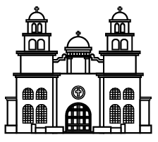

5:00 PM
Ceremonia religiosa
Parroquia San Juan Bautista

Oscar y Valery
20 Junio 2026
Queremos que seas parte de este momento tan especial para nosotros. Nuestra historia de amor se fortalece y queremos celebrarla contigo.
5:00 PM
Parroquia San Juan Bautista

6:30 PM
Jardín Parque del Lago
7:30 PM
Momento especial para guardar recuerdos juntos
8:00 PM
Un espacio para compartir, celebrar y levantar la copa
9:00 PM
La fiesta continúa hasta el cansancio
Un look formal para el jardín de eventos, con zapatos cómodos para que puedas bailar hasta el cansancio. No vestimenta en color blanco.